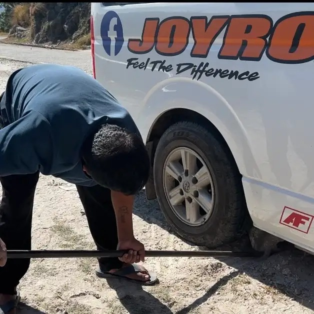
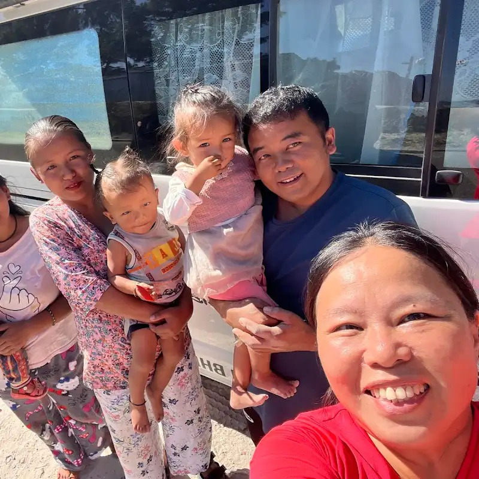

Real Story · 中文
有时候，路会把你卡住，也会把人带到你面前。
03/12/2023，我在 Nepal 往 Daman 的路上。 那天原本只是想找一个角度，拍下山路和风景。 可是 fate 好像有自己的安排。
Toyotaki 突然卡住了。 车身被路边一块顽固的大石头顶住，进也不是，退也不是。 那一刻，我心里真的有一点慌。
这不是城市停车场的小问题。 这是在 Nepal 山路边，一个人、一辆 campervan、一块石头。 你会突然意识到，solo overland journey 并不只是风景和自由。 它也有很多你必须自己面对的困境。
就在我不知道该怎么办的时候，Sanjay Gole 和他的家人出现了。 一开始他们还有一点犹豫，但很快就靠近，开始帮忙。 Sanjay 带着工具，也有经验，一点一点想办法把 Toyotaki 从那块石头旁边救出来。
最意外的是，我们后来发现 Sanjay 会说 Malay。 原来他以前在 Malaysia 工作过几年。 那一刻，Nepal 的山路、Malaysia 的语言、一个被石头卡住的 campervan， 全部突然连在一起。
我们原本只是陌生人。 可是路边的一次困难，让我们有了交集。 有些 bond 不是慢慢建立的，而是在你最需要帮助的那一刻，突然出现。

English Memory Summary
A roadside rescue became a cross-border bond.
On 03/12/2023, while driving toward Daman in Nepal, Tuzi stopped in search of a landscape photo. Instead, Toyotaki became stuck against a stubborn roadside rock.
In that uncertain moment, Sanjay Gole and his family appeared. They approached with kindness, and Sanjay used his tools and experience to help free the campervan.
The encounter became even more meaningful when Tuzi discovered that Sanjay could speak Malay, because he had spent years working in Malaysia. A roadside problem in Nepal suddenly became a bridge between two worlds.
What remained was not only the memory of being rescued, but the warmth of strangers who became part of the journey.
Heart Statement
路会制造困难，也会安排善意。
我以为那一天只是 Toyotaki 被石头卡住。 后来才知道，那也是路把 Sanjay 和他的家人带到我面前。
在一个陌生国家、陌生山路、陌生语言的地方， 突然听见 Malay， 突然有人愿意弯下身子帮你处理车底的石头。
那种感动，不只是 thank you。 它会变成你记得一辈子的 road kindness。
The road did not only trap me that day. It also introduced me to kindness.